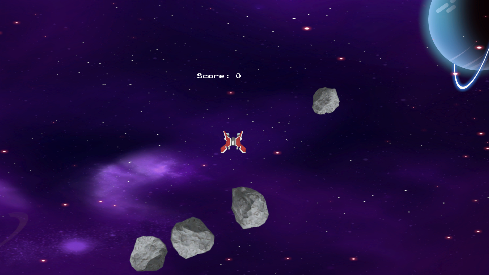
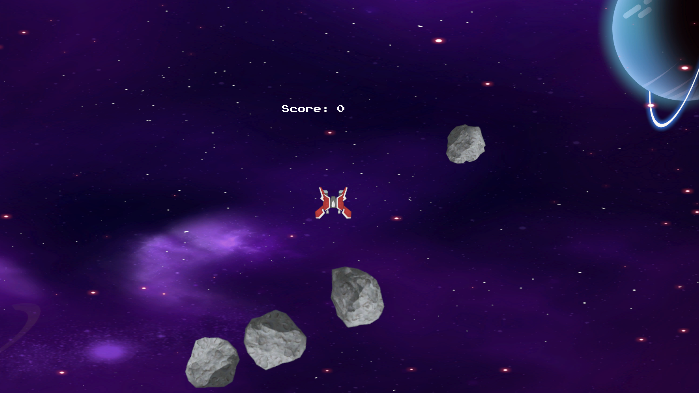

Space Survivor Game


To play go inside the SpaceSurvivor folder, inside the Build folder and start the 'Game' executable file
Download Game FilesSpace Asteroids Game

 

To play go inside the Space Asteroides folder, inside the Build folder and start the 'Space Asteroides' executable file
Download Game FilesJump Jump Birdie Game


To play go inside the Jump Jump birdie folder, inside the Build folder and start the 'Jump Jump Birdie' executable file
Download Game FilesAdult Video Aggregator Project
Developed a full-stack web application that allows users to browse, search, and filter videos by category, actor and series/networks.
Built for a client as a freelance project, using an agile development approach with regular feature updates based on feedback.
Tech Stack:
✅Node.js (backend), JSON (data storage), HTML, CSS, JavaScript (frontend), Ngrok (global access)
✅Implemented CRUD operations for managing videos, actors, and categories
✅Designed a secure link sanitization system to ensure safe & clean URLs
✅Developed password-protected access for restricted content
✅Optimized for mobile & desktop responsiveness
✅Developed a full-stack web application that allows users to browse, search, and filter videos by category, actor and series/networks.
✅Built for a client as a freelance project, using an agile development approach with regular feature updates based on feedback.
Tech Stack:
✅Node.js (backend), JSON (data storage), HTML, CSS, JavaScript (frontend), Ngrok (global access)
✅Implemented CRUD operations for managing videos, actors, and categories
✅Designed a secure link sanitization system to ensure safe & clean URLs
Skills: Full-Stack Development · Node.js · JSON · Cascading Style Sheets (CSS) · HTML · JavaScript · CRUD · Data Security · Access Control ·
Ngrok Integration · Agile Project Management · API Development


This project was a freelance job for a client who authorized me to share it in my portfolio. Due to the nature of the website, all images have been censored, and the files are not publicly shared. However, I can provide access to the live site upon request to showcase my work.
Naval Management Project
Developed a Naval Freight Management System using ANSI C for optimizing cargo transport and route planning for a shipping company.
The system incorporates key features to enhance operational efficiency.
Key Features:
✅Cargo Optimization – Optimizes cargo loading to maximize profit while staying within the ship's weight limit.
✅Route Optimization – Calculates the shortest travel route and the one with the fewest port stops between two locations.
✅Port & Route Management – Allows users to add, remove, or modify ports and routes as needed for dynamic operations.
Technologies & Libraries Used:
✅ANSI C – Developed in C programming language for optimal system performance.
✅Breadth-First Search (BFS) – Used for shortest path calculations.
✅Dynamic Programming (Knapsack Algorithm) – Applied for cargo optimization.
Project Highlights:
✅Implemented cargo optimization techniques to ensure maximum profit while adhering to weight limits.
✅Developed a route optimization feature for efficient travel and minimized port stops.
✅Used modular programming to build a flexible and scalable system.
✅Dynamic Programming for cost-efficient cargo planning and route calculations.
Skills: C (Programming Language) · Algorithms · Data Structures · Dynamic Programming · Graph Theory


Customer Management Project
Developed a Customer Management System using ANSI C for a company selling computer components, allowing efficient management
of client records and implementation of multiple search algorithms to optimize data retrieval.
Key Features:
✅CRUD Operations – Allows viewing, adding, editing, and deleting client records.
✅Advanced Search – Implements sequential, binary, ternary, and interpolation search algorithms for efficient data retrieval.
✅Execution Time Analysis – Measures and compares the efficiency of each search algorithm.
✅File Persistence – Saves and loads client data from files for persistent storage.
✅Validation – Ensures proper data input to prevent errors and maintain data integrity.
Technologies & Libraries Used:
✅ANSI C – Developed in C programming language.
✅Search Algorithms – Sequential, Binary, Ternary, Interpolation Search.
✅File I/O – Reads and writes client data to files.
✅Execution Time Analysis – Benchmarking and performance comparison of algorithms.
Project Highlights:
✅Implemented multiple search algorithms for optimized client search.
✅Enabled file persistence for efficient record management.
✅Applied data validation techniques for reliable system performance.
✅Measured the efficiency of search algorithms through execution time analysis.
Skills: C (Programming Language) · Algorithms · Data Structures · Search Algorithms · Performance Analysis

Maritime Travel Planner Project
Developed a Maritime Travel Planner application in Python, enabling users to plan and modify sea voyages for passenger and cargo ships.
The application features graph-based route visualization, interactive trip modification, and PDF report generation for detailed voyage summaries.
Key Features:
✅Plan Voyage – Users select origin and destination ports, ship type, and get trip duration estimates.
✅Modify Trips – Add, remove, or edit ports and routes dynamically.
✅View Graphs – Graph-based visualization of routes for optimized trip planning.
✅Save as PDF – Generates a detailed trip summary including cost, duration, and travel path.
Technologies & Libraries Used:
✅Python – Core programming language.
✅PyQt6 – GUI for an interactive user experience.
✅NetworkX – Graph-based route visualization and optimization.
✅FPDF – PDF report generation for trip summaries.
✅Tkinter – Used for input dialogs and user interactions.
Project Highlights:
✅Implements graph algorithms for maritime route planning.
✅Full-stack Python application with GUI and PDF integration.
✅Designed for both passenger and cargo ship logistics.
✅Demonstrates data structure management, visualization, and document generation.
Skills: Python (Programming Language) · Graph Algorithms · GUI development · Data Visualization · PDF Creator


Cipher Encoding Project
Developed a Python-based application implementing multiple cipher encoding techniques,
combining iterative and recursive algorithms with a graphical user interface (GUI) using PyQt6.
Key Features & Encoding Techniques:
✅Fake First Letter Repetitive Cipher – Inserts structured fake letters into words.
✅Fake First Letter Recursive Cipher – Recursive variation for layered encoding.
✅Roman-Arabic Repetitive Cipher – Encodes text using Roman vowels and Arabic consonants.
✅Roman-Arabic Recursive Cipher – Recursive version for deeper encoding.
✅Naval Battle Cipher (Iterative & Recursive) – Grid-based encoding simulating a naval battlefield.
Technologies & Libraries Used:
✅Python – Core programming language.
✅Matplotlib – Visual representation of encoded messages.
✅Unidecode – Proper accent removal and text processing.
✅NumPy – Optimized numerical operations.
✅PyQt6 – GUI for enhanced user interaction.
Project Highlights:
✅Showcases advanced algorithm design, cryptography techniques, and software usability.
✅Demonstrates strong problem-solving skills in Python, recursion, and GUI development.
✅Built from scratch, integrating multiple libraries for enhanced functionality.
Skills: Python (Programming Language) · Algorithm Development · Cryptography · GUI development · Data Structures


Numerical Calculus Project
Developed a Numerical Calculus project using MATLAB to solve complex mathematical and engineering problems through numerical methods.
The project applies advanced calculus techniques, including Newton-Raphson root-finding,
polynomial fitting, interpolation, extrapolation, and numerical integration.
Key Features:
✅Fall Time Calculation – Uses Newton-Raphson to estimate the fall time of a water droplet.
✅Polynomial Fitting & Interpolation – Implements least squares fitting and 6th-degree polynomial interpolation.
✅Oxygen Concentration Estimation – Uses data interpolation and extrapolation to predict oxygen levels at various temperatures.
✅Fuel Mass Calculation – Computes total fuel mass using trapezoidal and Simpson's numerical integration rules.
Technologies & Libraries Used:
✅MATLAB – Used for computational mathematics and numerical simulations.
✅Newton-Raphson Method – Root-finding algorithm.
✅Least Squares & Polynomial Interpolation – Data fitting and prediction.
✅Numerical Integration (Trapezoidal & Simpson's Rule) – Calculating integral approximations.
Project Highlights:
✅Demonstrates real-world applications of numerical methods.
✅Solves engineering and scientific problems with computational math.
✅Uses MATLAB scripting for precise calculations and simulations.
✅Implements multiple numerical techniques for data analysis and estimation.
Skills: MATLAB · Numerical Analysis · Data Analysis · Numerical Simulation · Numerical Modeling

3D Printing
For the last three years, I’ve been working with 3D printing, starting with two filament 3D printers, Sovol SV02 and Creality Ender 3, using PLA. Later on, I expanded my setup with a resin printer, the HALOT R6 2K, and a Cura cleaning machine specifically for resin prints.
I primarily use Cura and MeshMixer for the 3D models and slicing in the filament printers. For resin printing, I use Lychee Slicer for the slicing process.
I have 3D printed a variety of items, from decorative objects and household items to cosplay accessories. With the resin printer, I have made detailed figures and tabletop models, which I painted after printing. Additionally, I’ve sold some of the items I’ve printed and painted.